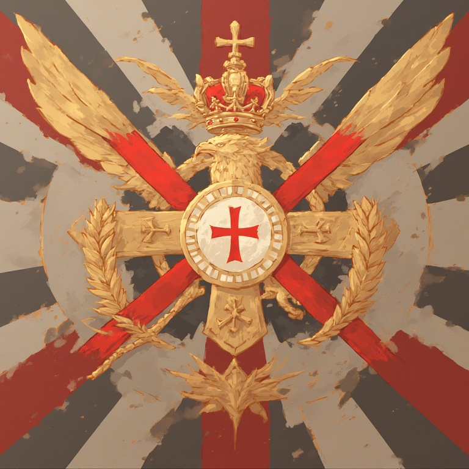

Imperio de Melromark
Fundadores del Imperio:
Rey TOROELCRACK2 y Clérigo SURNIGHTVT
Sistema de Gobierno:
Teocracia Fascista
Economía Imperial:
Exportación de alimentos, productos de cuero, ganado y carbón
Dirección del Servidor:
selected-sends.gl.joinmc.link
"El Imperio de Melromark extiende su mano a todos los creyentes.
Bajo la guía divina de la Santa Iglesia, construimos una nación de
fe inquebrantable y prosperidad eterna. Los no creyentes vagan en
la oscuridad, pero las puertas de nuestro reino están abiertas
para quienes acepten la luz de la verdad. Únete a nosotros,
hermano, y juntos forjaremos un imperio glorioso donde la fe y la
fuerza se unen. Aquellos que se opongan a la voluntad divina
conocerán la justicia del Imperio. ¡Gloria a Melromark! ¡Gloria a
la Iglesia! ¡Gloria a los fieles!"